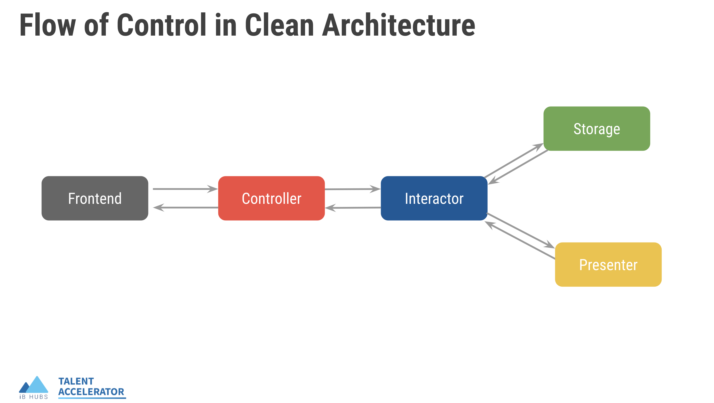
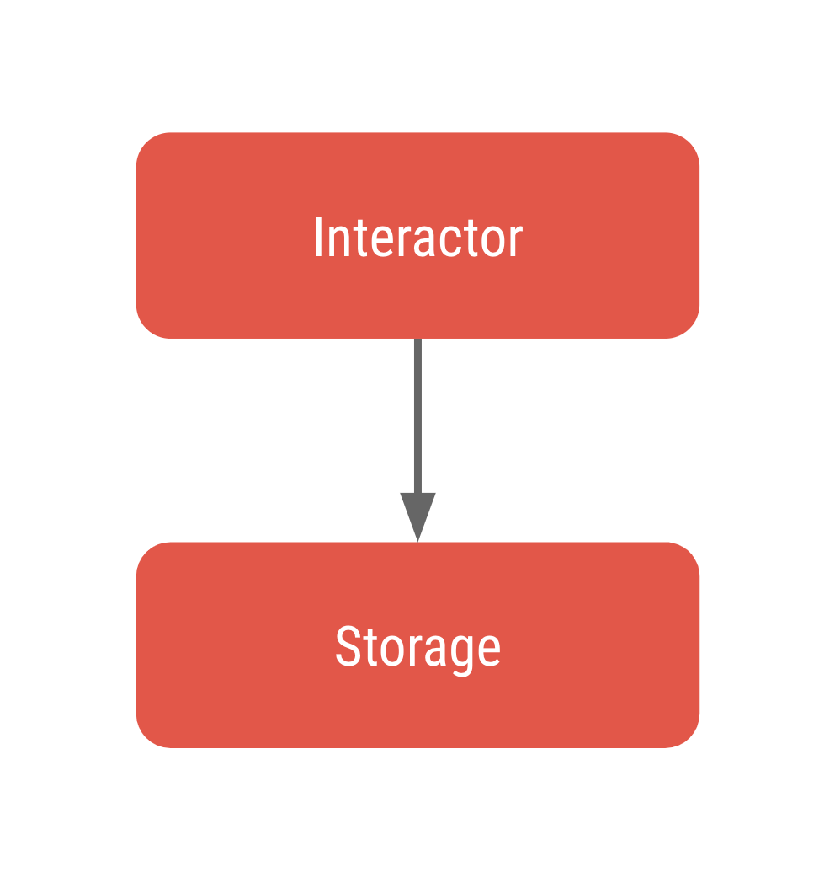
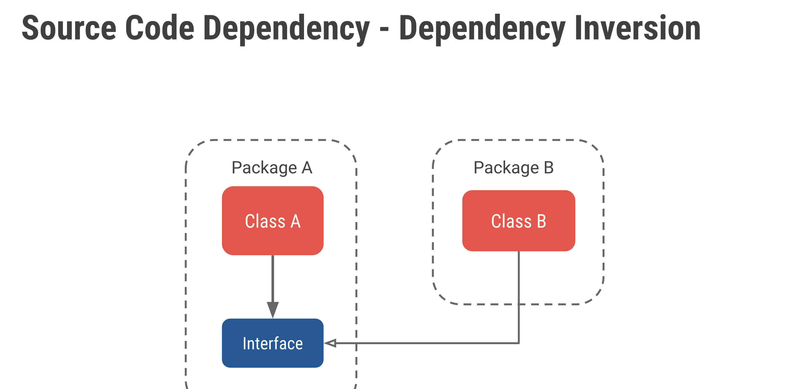

Clean Architecture
How your org structures production Django code into four well-separated modules — and why this makes everything easier to test and change.
Why Does Structure Matter?
Software has two values: behaviour (what it does) and structure (how easy it is to change). Behaviour gets all the attention, but structure is what keeps a codebase alive.
When different concerns — fetching a row from the DB, calculating a score, building a JSON response — are all tangled inside the same function, every change touches everything. A database swap forces you to edit business logic. A UI change ripples into ORM queries. Tests become slow, brittle, and hard to write.
Clean Architecture solves this by splitting the code into four independent modules, each responsible for exactly one concern.
The Four Modules
Your org's Clean Architecture organises every feature into exactly four packages:
Receives the HTTP request, deserialises inputs (via DRF serializers / URL params), calls the Interactor, and returns the response.
Implements all business rules. It knows what to do but not how data is stored or how the response is formatted.
Runs ORM queries — create, get, filter, update, delete. No business logic lives here.
Builds the JSON (or HTML) response that goes back to the client. No ORM queries live here.
Each module changes for a different reason. The Interactor changes when business rules change. The Storage changes when the database schema changes. The Presenter changes when the API contract changes. Because they change independently, they should live independently.
Flow of Control
Here is the official diagram from your org's training materials — read it left to right:

Walking through the arrows:
- Frontend → Controller: the HTTP request arrives. The Controller parses it (URL params, request body) and calls the Interactor.
- Controller → Interactor: the Interactor receives plain Python values — no Django
requestobject, no HTTP concepts. - Interactor → Storage: the Interactor calls the storage interface to read or write data.
- Interactor → Presenter: once it has the data, the Interactor hands it to the presenter interface to be formatted.
- Presenter → Interactor → Controller → Frontend: the formatted response travels back up the chain.
HttpResponse, never touches a Django model directly, and never builds a JSON dict. Those are responsibilities of the other modules.
Volatile vs Stable Components
Not all modules change at the same rate:
| Module | Volatility | Why it changes |
|---|---|---|
| Interactor | Stable | Business rules change rarely |
| Storage | Volatile | DB schema, ORM versions, caching changes |
| Presenter | Volatile | API contract, serializer fields, versioning |
| Controller | Volatile | URL routing, HTTP method, auth changes |
A non-volatile component must never depend on a volatile one. If the stable Interactor imported from Storage directly, a DB change would force you to edit your business logic. Clean Architecture prevents this via Dependency Inversion.
Dependency Inversion with Python Abstract Classes
The rule: stable modules define interfaces; volatile modules implement them.
Step 1 — What "source code dependency" means
When Class A imports and calls Class B, Package A is said to depend on Package B. If Package B changes, Package A may break.

Step 2 — The problem in Clean Architecture
Without any protection, the Interactor would directly depend on the Storage implementation. Since Storage is volatile (it changes with schema migrations, caching, etc.), this drags the stable Interactor into every storage-side change.

Step 3 — The generic fix: Dependency Inversion
We add an Interface (abstract class) inside Package A. Class A now depends only on the Interface. Class B (in Package B) implements that Interface — so Package B now depends on Package A, not the other way around. The dependency has been inverted.

Step 4 — Applied to Clean Architecture
The StorageInterface (abstract class) lives inside the interactors package — shown by the dashed box enclosing both. The concrete Storage lives outside and implements that interface. The Interactor only ever knows about the interface.

interactors/. Storage (outside) depends on the interface (inside) — not the reverse.
The same pattern applies to the Presenter: a PresenterInterface also lives inside interactors/presenters/, and the concrete Presenter in the top-level presenters/ package implements it.
In Python — using Abstract Classes
Python doesn't have interfaces like Java, but we use abstract base classes (ABC) from the standard library:
# interactors/storages/storage_interface.py ← lives INSIDE interactors/
from abc import ABC, abstractmethod
class MovieStorageInterface(ABC):
@abstractmethod
def get_movie_by_id(self, movie_id: int):
pass
@abstractmethod
def get_movies_by_director(self, director_id: int):
pass# storages/movie_storage.py ← the concrete implementation
from imdb.interactors.storages.storage_interface import MovieStorageInterface
from imdb.models import Movie
class MovieStorage(MovieStorageInterface):
def get_movie_by_id(self, movie_id: int):
return Movie.objects.get(id=movie_id)
def get_movies_by_director(self, director_id: int):
return Movie.objects.filter(director_id=director_id)# interactors/get_movie_details_interactor.py
from imdb.interactors.storages.storage_interface import MovieStorageInterface
from imdb.interactors.presenters.presenter_interface import MoviePresenterInterface
class GetMovieDetailsInteractor:
def __init__(self, storage: MovieStorageInterface,
presenter: MoviePresenterInterface):
self.storage = storage
self.presenter = presenter
def get_movie_details(self, movie_id: int):
movie = self.storage.get_movie_by_id(movie_id)
return self.presenter.present_movie_details(movie)# views.py (Controller)
from imdb.interactors.get_movie_details_interactor import GetMovieDetailsInteractor
from imdb.storages.movie_storage import MovieStorage
from imdb.presenters.movie_presenter import MoviePresenter
def get_movie_details(request, movie_id):
storage = MovieStorage()
presenter = MoviePresenter()
interactor = GetMovieDetailsInteractor(storage=storage, presenter=presenter)
return interactor.get_movie_details(movie_id=movie_id)MovieStorage for a MockStorage that returns hardcoded data. Your business logic is tested in complete isolation from the database — no migrations, no DB fixtures, just fast unit tests.
App Structure
Here is how an app using Clean Architecture looks on disk. Notice how interfaces live inside the interactors/ package:
interactors/ contain the interfaces (abstract classes). The top-level ones contain the implementations. The implementations depend on the interfaces, never the reverse.
Why Your Org Chose This
Testable in isolation
Test the Interactor with a mock storage — no real DB needed. Tests run in milliseconds.
Swap the database
Swap Postgres for something else by writing a new Storage implementation. The Interactor doesn't notice.
Independent development
One engineer writes the Interactor while another writes the Storage — as long as both agree on the interface.
Readable codebase
New joiners know exactly where to look: business rule? interactors/. ORM query? storages/. Response shape? presenters/.
What to Do Next
-
Browse a real app. Open any production app in your codebase. Locate the
interactors/,storages/,presenters/, andviews.py. Trace one full request from controller to storage and back. -
Read the interface definitions. Find the abstract classes in
interactors/storages/andinteractors/presenters/. Notice that they contain no Django imports — pure Python ABCs. -
Look at a test for an Interactor. Open
tests/interactors/in any app. Notice there are no DB queries — just mocked storage and presenter objects passed in.